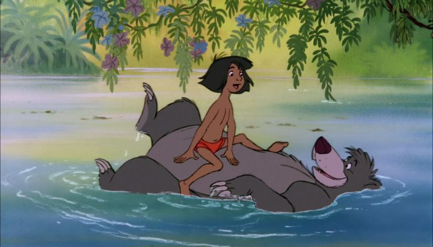

I know some people who will be quick to say 1967's "The Jungle Book" is their favorite Disney movie. Even as a kid, I never fully got into it, as the idea of a kid wandering barefoot in his underwear around a jungle wasn't appealing. Like a lot of older movies on Disney Plus, there's a also a culture warning at the beginning, because... monkeys are in the movie? I didn't know that wasn't allowed anymore. I imagine the inspiration of the British-voiced elephant brigade will trigger more relevant memories of colonization in India. But whatever the inspirations and underlying messaging, even as an adult, I didn't recognize anything offensive with this movie, and it'd be a forced stretch to say there was. As to why you would want to see "The Jungle Book," or why it's so beloved? It's officially the last film Walt Disney was involved with as producer, before his untimely death. Like other recent films by the studio, it has a up-beat and catchy soundtrack, but is probably the only one with songs you could actually memorize the lyrics to. The movie has some excellent character animation, and is probably the best-looking movie from the Xerox-era of Disney films. There's also something about Mowgli's relationship and growth, disagreeing with parental figures that are doing their best to protect him, that feels true and more relatable to both children and adults. Loosely based on the books by Rudyard Kipling, the movie opens with the tone of a classic, but exotic, fable. The human baby (or "man-cub") Mowgli is found alone in the Indian jungle. With a little help by the panther Bagheera, he is adopted by a family of wolves, until years later when the tiger Shere Khan is rumored to have returned to the jungle. He hates man, and is certain to kill Mowgli. The pack agrees the safest option is for Mowgli to be brought back to a man village. Bagheera agrees to lead him there, but Mowgli isn't interested in leaving the jungle he called home for so long. He wanders off a few times, nearly getting killed by different predators, each an example Bagheera uses to justify that he isn't safe in the jungle. Eventually, Mowgli meets the bear Baloo (a "jungle bum" as Bagherra calls him), a care-free animal that eats and scratches himself all day (the "bare necessities of life"), and is large enough to protect both himself and Mowgli most of the time. He's the type of role model Mowgli wants, but even Baloo understands the threat Shere Khan poses.Each animal Mowgli meets (including snakes, monkeys, elephants, vultures and more) are fun to watch on screen, thanks to large personalities and voice acting. And their expressive animation is truly wonderful, especially for the elephants and Shere Khan the tiger. Disney fans will recognize animal designs that are reused frequently in later movies and television, like Bagheera's head looking like "Winnie the Pooh's" Tigger, or Baloo being reused for every large bear character. And I'm sure you know the songs "Bare Necessities" and "I Wanna Be Like You."  Despite the playful tone, there are definite threats to Mowgli each day to keep viewers on their toes. It leads to a climatic face-off with Shere Khan, and finds an organic resolution that caps the story without relying on further movies (Rudyard Kipling's original story was a series of short stories across multiple books). It's a stronger story than either of Disney's later two live-action re-makes (people quickly forget there was a 1994 remake before the 2016 one). "The Jungle Book" is a different sort of fairy tale for Disney, and with a catchy soundtrack and above-standard animation at the time, it still holds up well as one of the better movies from the era. It still holds nostalgia for me, and those memories of opening a clamshell VHS case. "The Jungle Book" was like opening a book into an exotic and ominously dangerous world, an adventure of risk that was still suitable for a toddler.
- "Ani" More reviews can be found at : https://2danicritic.github.io/ Previous review: review_The_Island Next review: review_The_King_and_I